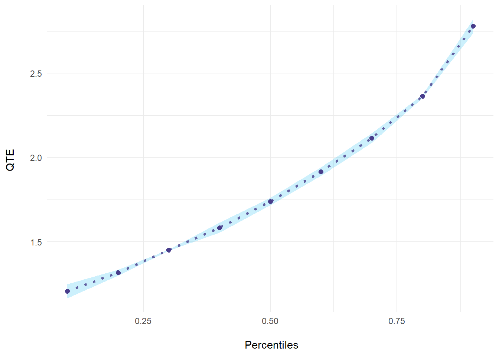
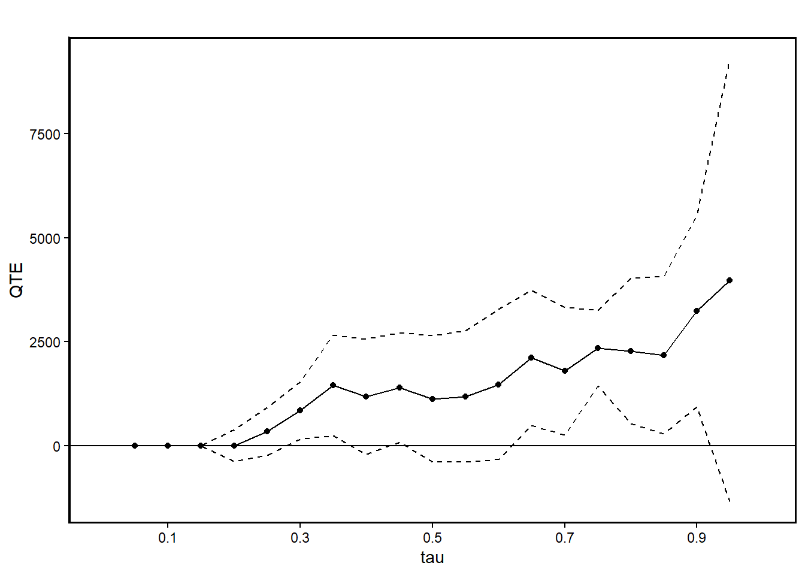
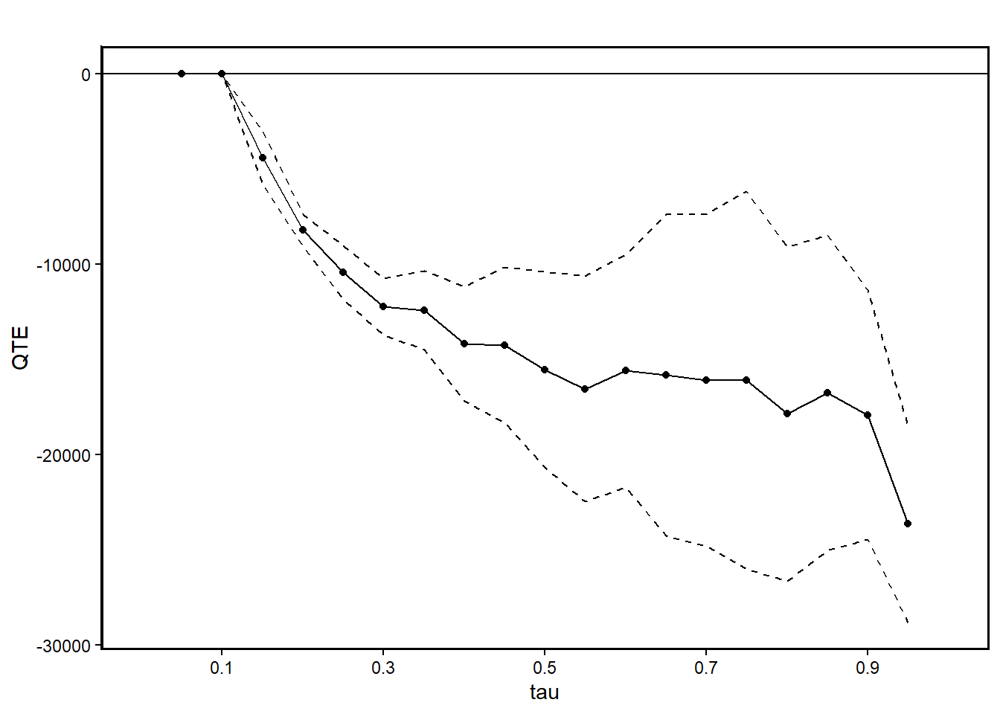
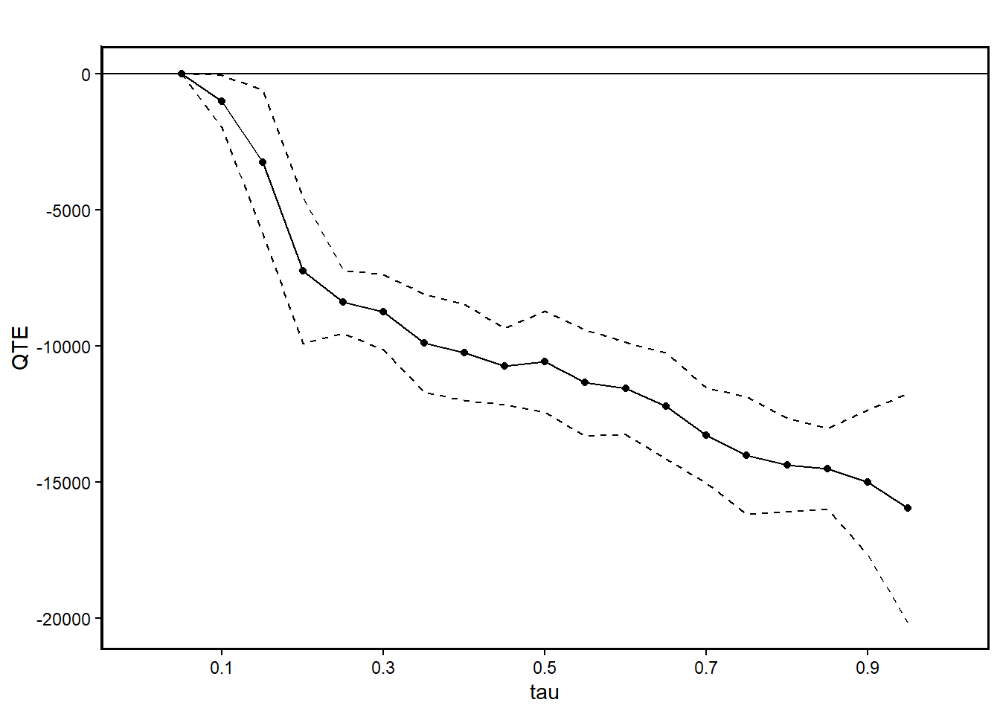
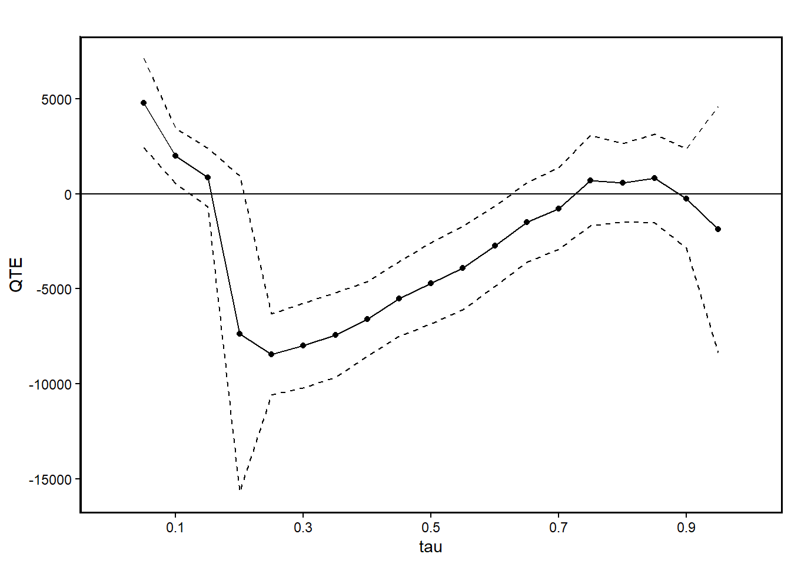
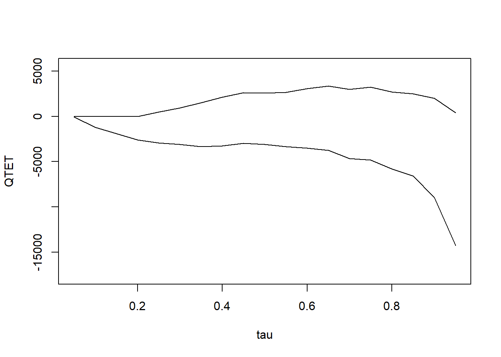
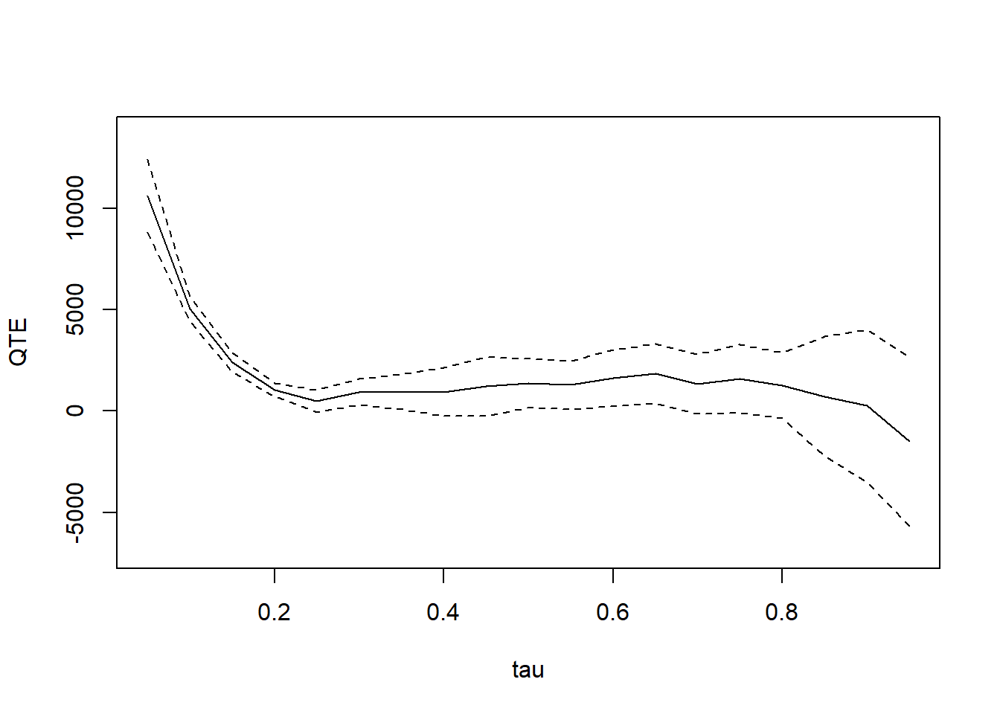

40 Changes-in-Changes
The Changes-in-Changes (CiC) estimator, introduced by Athey and Imbens (2006), is the natural extension of Difference-in-Differences when the question of interest is no longer “what was the average effect of the treatment?” but “how did the treatment shift the distribution of outcomes?” Where standard DiD estimates the Average Treatment Effect on the Treated (ATT), CiC estimates the Quantile Treatment Effect on the Treated (QTT) at each quantile \(\theta\) of the outcome distribution. Two policies that move the same average can have radically different distributional effects; CiC is the estimator that lets you see the difference.
The motivation is most easily appreciated by counter-example. Imagine two job-training programs that each leave the average earnings of participants unchanged. The first program raises the earnings of low-wage workers and lowers the earnings of high-wage workers. The second leaves low-wage workers unaffected and lowers everyone above the median. To a welfare analyst these are completely different policies, yet a regression of earnings on a treatment indicator returns the same number for both. Quantile-based methods like CiC restore the distributional structure that the conditional mean throws away, so that policy decisions which hinge on who gains and who loses can be made on the relevant evidence.
The same point applies wherever the policy or theoretical question concerns distributional shape rather than average level. Income-support programs are evaluated for their effects at the bottom of the distribution; technology shocks are studied for their effects on inequality, not just average productivity; marketing interventions in heavy-tailed settings (a small number of high-spending customers driving most revenue) often have effects that concentrate at one end of the distribution and not in the middle. In all of these settings, methods that assume a uniform treatment effect, including standard linear regression and conventional DiD, can be silent on the very feature of the data that the analyst cares most about. Quantile treatment effects make the distributional heterogeneity visible, and under the right conditions they can also be aggregated to recover the average treatment effect, often under assumptions weaker than those required by mean-based methods.
The remainder of the chapter develops CiC and its companions in detail. We begin with the underlying definitions and the assumptions that license a quantile-level interpretation, then walk through the estimator itself, contrast it with Quantile DiD (QDiD) and standard DiD, and close with applied examples and practical guidance.
Reading guide and reference papers. The original development of CiC is Athey and Imbens (2006), which derives the estimator and its identifying assumptions in a cross-sectional and short-panel setting. Frölich and Melly (2013) extends the framework to instrumental-variable settings and is the natural companion when the underlying treatment is endogenous (see also the Instrumental Variables chapter). Callaway and Li (2019) generalizes the panel-data setup, including longer panels and time-varying covariates. Huber et al. (2022) provides a useful synthesis and a practitioner-oriented framing. A complementary set of code examples in Stata is maintained at https://sites.google.com/site/blaisemelly/home/computer-programs/cic_stata.
40.1 Key Concepts
CiC reorganizes the basic DiD logic around three concepts. Each is straightforward in isolation, but the combination is what allows the estimator to recover quantile-level counterfactuals from observational data.
The first is the Quantile Treatment Effect on the Treated (QTT), the difference between the \(\theta\)-quantile of the treated group’s potential-outcome distribution under treatment and the \(\theta\)-quantile of the same group’s potential-outcome distribution under no treatment. Where the ATT collapses the entire distributional comparison into a single number, the QTT preserves it as a function of \(\theta \in (0,1)\). The reader gets a curve, not a point estimate, and the curve answers the question “by how much did the treatment shift the \(\theta\)-th percentile of the outcome distribution among the treated?”
The second is rank preservation (sometimes phrased as rank similarity), the assumption that an individual’s rank in the untreated outcome distribution is stable across counterfactual states. A worker who would have been at the 70th percentile of earnings in the absence of treatment continues to be at the 70th percentile under the counterfactual we use to construct the comparison. This is a strong assumption, often defensible in short panels with relatively stable populations and harder to defend in long panels with substantial mobility across the distribution. It is the price of admission to quantile-level identification, and it should be argued in context rather than asserted from a template.
The third is the counterfactual distribution of the treated group’s untreated outcomes in the post-period. This is the central object the estimator must construct, and it is where CiC differs sharply from DiD. Where DiD constructs a counterfactual mean by adding the control group’s pre-to-post change to the treated group’s pre-period mean, CiC constructs a counterfactual entire distribution by mapping treated-group pre-period ranks through the control group’s distributional shift. The mapping is what gives CiC its scale-invariance and what distinguishes it from QDiD.
40.2 Identification: The Structural Logic Behind CiC
CiC is more than a clever rearrangement of CDFs. It is grounded in a structural model of how outcomes are produced, and the identification result follows from properties of that model. Working through the structural setup once makes the rest of the chapter much easier to read.
The starting point is to write the untreated potential outcome as a function of an unobserved scalar \(U_i\) (interpretable as ability, latent demand, productivity, willingness-to-pay, or any other one-dimensional summary of unobservables) and a time-specific production function \(h_t(\cdot)\):
\[ Y_{it}(0) \;=\; h_t(U_i), \]
where \(h_t\) is strictly increasing in \(U_i\) for every \(t\). The strict monotonicity is what licenses thinking of \(U_i\) as a rank in the outcome distribution: a unit with a higher \(U_i\) has a higher untreated outcome at every period, by construction.
Two assumptions complete the setup. First, the distribution of \(U_i\) is constant over time within each group, so any pre-to-post change in the outcome distribution within the control group is attributable entirely to a change in the production function \(h_t\), not to the population of units. Second, the support of \(U_i\) in the treated group must be contained in the support of \(U_i\) in the control group, so that for every value of \(U\) that shows up among the treated, there is a corresponding control unit that maps the same \(U\) through \(h_t\) in both periods. This is the support-containment assumption, and it is the structural counterpart of the overlap condition we encountered in the foundations chapter.
Under these assumptions, the counterfactual untreated CDF for the treated group in the post-period can be expressed as a composition of three observed CDFs, exactly the formula that the estimator will use. The intuition is direct: a treated post-period unit with outcome \(y\) has some unobserved \(U = h_{1}^{-1}(y)\). The strict monotonicity of \(h_1\) means \(U\) is uniquely identified by the rank of \(y\) in the treated pre-period distribution (because the treated group’s \(U\)-distribution is constant over time). That rank can then be carried through to the control pre-period distribution, where it identifies a control unit with the same \(U\). Finally, that control unit’s post-period outcome is observed, and it equals \(h_1(U)\), which is exactly the counterfactual untreated outcome we want for the treated unit. Composing the three CDFs in the right order delivers the entire counterfactual distribution.
The structural reading clarifies a few things at once. Rank invariance is not an arbitrary statistical assumption but a direct consequence of the monotone production-function structure. Scale invariance to monotone outcome transformations follows because applying \(g\) to \(Y\) leaves the underlying \(U\) untouched and just composes with \(h_t\). Failure modes become visible: if \(h_t\) is not monotone in \(U\) (because two distinct \(U\) values can produce the same outcome through different channels), if the \(U\)-distribution shifts over time within the control group (because of compositional change), or if the support-containment assumption fails (because the treated group has \(U\)-values that simply do not appear among the controls), CiC is no longer point-identified, and the analyst must fall back on bounds or alternative estimators.
The structural model is also what distinguishes CiC from QDiD at the level of identification. QDiD imposes a distributional parallel-trends condition that has no structural interpretation in terms of unobserved heterogeneity; it is purely a statement about the evolution of marginal CDFs. CiC instead builds the parallel-trends-like behavior into the population of units (a stable \(U\)-distribution) and lets the time-variation operate entirely through the production function \(h_t\). The two assumptions are non-nested: each can hold while the other fails. That is why reporting both estimates and discussing their concordance or divergence is more informative than committing to one.
40.3 Estimating QTT with CiC
The estimation logic mirrors that of DiD but with one essential twist: instead of differencing means, CiC differences entire distributions. The recipe maps each treated unit’s pre-treatment rank in the treated distribution to the corresponding value in the control pre-period distribution, then carries that value forward through the control group’s pre-to-post distributional shift to construct the counterfactual treated post-period distribution. The treatment effect at any quantile \(\theta\) is then read off as the difference between the observed treated post-period quantile and this constructed counterfactual quantile.
The setup uses the four distributions of a \(2 \times 2\) DiD design:
- \(F_{Y(0),00}\): CDF of \(Y(0)\) for control units in period \(0\).
- \(F_{Y(0),10}\): CDF of \(Y(0)\) for treatment units in period \(0\).
- \(F_{Y(0),01}\): CDF of \(Y(0)\) for control units in period \(1\).
- \(F_{Y(1),11}\): CDF of \(Y(1)\) for treatment units in period \(1\).
The first three are CDFs of the untreated potential outcome and are observed directly because the units in question were untreated at the time. The fourth is the CDF of the treated potential outcome, also observed directly. The challenge is that we never observe \(F_{Y(0),11}\), the counterfactual untreated CDF for the treated group in the post-period, and the entire estimator is built around constructing a credible estimate of it.
The Quantile Treatment Effect on the Treated (QTT) at quantile \(\theta\) is the difference between the observed and counterfactual quantiles:
\[ \Delta_\theta^{QTT} \;=\; F_{Y(1),11}^{-1}(\theta) \;-\; F_{Y(0),11}^{-1}(\theta). \]
The first term is observed; the second is the object the estimator must construct. CiC builds the counterfactual CDF by composing three observed CDFs in a way that the rank-preservation assumption justifies:
\[ \hat{F}_{Y(0),11}(y) \;=\; F_{Y,01}(F_{Y,00}^{-1}(F_{Y,10}(y))). \]
The intuition is a three-step ladder. Start with a treated post-period value \(y\) and ask what its rank would have been in the treated pre-period distribution; that rank is \(F_{Y,10}(y)\). Carry that rank into the control pre-period distribution by computing the value at the same rank, \(F_{Y,00}^{-1}(F_{Y,10}(y))\). Finally, ask what rank that value occupies in the control post-period distribution, \(F_{Y,01}(F_{Y,00}^{-1}(F_{Y,10}(y)))\). Under rank invariance, this rank is also the rank that the treated unit at \(y\) would have occupied in the counterfactual treated post-period distribution. The resulting CDF is the counterfactual we wanted, and it inherits its scale-invariance directly from the rank-based construction.
Inverting the composition gives the counterfactual quantile function:
\[ \hat{F}_{Y(0),11}^{-1}(\theta) \;=\; F_{Y,10}^{-1}(F_{Y,00}(F_{Y,01}^{-1}(\theta))). \]
The estimator of the QTT at quantile \(\theta\) is then the difference between the observed treated quantile and this constructed counterfactual:
\[ \hat{\Delta}_\theta^{\text{CiC}} \;=\; F_{Y(1),11}^{-1}(\theta) \;-\; \hat{F}_{Y(0),11}^{-1}(\theta). \]
There is an equivalent and sometimes more intuitive way to write this. The CiC effect at quantile \(\theta\) is the difference between (i) the treated group’s pre-to-post change at quantile \(\theta\) and (ii) the control group’s pre-to-post change at the matched quantile \(\theta'\), where \(\theta'\) is the rank in the control distribution of the value the treated group attained at quantile \(\theta\) in the pre-period:
\[ \Delta_\theta^{\text{CiC}} \;=\; \Delta_{\theta,1}^{\text{QTT}} \;-\; \Delta_{\theta',0}^{\text{QTC}}. \]
Here \(\Delta_{\theta,1}^{\text{QTT}}\) is the change over time at quantile \(\theta\) in the treated group (\(D=1\)) and \(\Delta_{\theta',0}^{\text{QTC}}\) is the change over time at quantile \(\theta'\) in the control group (\(D=0\)). The matched quantile \(\theta'\) is chosen so that the value at quantile \(\theta'\) in the control pre-period equals the value at quantile \(\theta\) in the treated pre-period. The expression makes plain that CiC is a “differences-in-changes-along-distributions” estimator: at each quantile of interest, we subtract the change that the matched quantile of the comparison group experienced.
A Worked Marketing Example
Suppose a company rolls out a new online retention strategy and wants to understand its effect on customer retention rates across the customer base, not just on average. The CiC framing of this question proceeds in three steps.
The QTT interpretation is the most direct payoff. Rather than producing a single “average effect on retention”, CiC produces a curve of estimated effects across the retention distribution: an estimate at the 10th percentile (the customers least likely to renew), at the 50th (the median customer), and at the 90th (the most loyal customers). A retention strategy that lifts the lower tail without affecting the upper tail (because high-retention customers were already going to renew) tells a substantively different story than one with a uniform effect, even when the two have the same average impact.
The rank-preservation assumption is what makes the curve interpretable. We assume that, in the absence of the new strategy, a customer who would have been at the 30th percentile of retention in the pre-period would still have been at the 30th percentile in the post-period. This is plausible when the customer base is relatively stable over the period of analysis and when retention propensity is driven by persistent characteristics rather than churning random factors. In a setting with high mobility across the retention distribution (rapid acquisition of new customers, frequent shifts in usage patterns), the assumption is harder to defend and the QTT estimates should be interpreted with corresponding caution.
The counterfactual-distribution construction is the empirical machinery that delivers the result. We use the control group’s pre-to-post distributional shift to estimate how the treated group’s retention distribution would have evolved without the new strategy, then compare this counterfactual to what the treated group actually exhibited under the new strategy. The quantile-by-quantile difference is the QTT at each percentile of interest.
40.4 Application
This section walks through the two main R packages for CiC-style estimation. The ecic package implements the panel-data extension of Callaway and Li (2019) and is the natural choice when treatment is staggered across cohorts. The qte package supports a broader menu of quantile-based estimators, including QTE, QTET, panel QTET under the distributional DiD assumption, partial-identification bounds, and direct CiC. We work through both because the right choice depends on the structure of the data and the assumption the analyst is willing to defend.
40.4.1 Estimation with the ecic Package
The ecic package implements an event-study version of CiC for staggered-adoption panel data. The interface mirrors the modern DiD packages: the user supplies the dependent variable, a group (cohort) indicator, a time indicator, a unit identifier, and a bootstrap specification, and the package returns QTT estimates by event time. The example below uses the package’s bundled dataset of county-level employment outcomes.
library(ecic)
data(dat, package = "ecic")
mod =
ecic(
yvar = lemp, # dependent variable
gvar = first.treat, # group indicator
tvar = year, # time indicator
ivar = countyreal, # unit ID
dat = dat, # dataset
boot = "weighted", # bootstrap procedure ("no", "normal", or "weighted")
nReps = 3 # number of bootstrap runs
)
mod_res <- summary(mod)
mod_res
#> perc coefs se
#> 1 0.1 1.206140 0.021351711
#> 2 0.2 1.316599 0.009225026
#> 3 0.3 1.449963 0.001859468
#> 4 0.4 1.583415 0.015296156
#> 5 0.5 1.739932 0.011240454
#> 6 0.6 1.915558 0.013060348
#> 7 0.7 2.114966 0.014482208
#> 8 0.8 2.363105 0.005173865
#> 9 0.9 2.779202 0.020831180
ecic_plot(mod_res)
The boot = "weighted" argument selects the weighted bootstrap, which is more robust than the standard normal bootstrap when the underlying distribution is heavy-tailed or asymmetric. In a real application, the number of bootstrap replications should be much larger than the nReps = 3 used here for demonstration; common choices range from \(500\) to \(2{,}000\) depending on compute budget and the precision needed for inference at extreme quantiles.
40.4.2 Estimation with the qte Package
The qte package collects a range of quantile-based estimators in a unified interface. We illustrate four of them: QTET in a randomized setting, QTE and QTET under a conditional independence assumption (CIA), QTET under a distributional DiD assumption, and partial-identification bounds when the distributional DiD is the only assumption available.
40.4.2.1 Quantile Treatment Effects in a Randomized Setting
When treatment is randomly assigned, the QTE and QTET coincide because the treated and untreated subpopulations are exchangeable. The following call uses the experimental sub-sample of the well-known LaLonde job-training data.
library(qte)
data(lalonde)
# randomized setting: QTE and QTET coincide
jt.rand <-
ci.qtet(
re78 ~ treat,
data = lalonde.exp,
iters = 10
)
summary(jt.rand)
#>
#> Quantile Treatment Effect:
#>
#> tau QTE Std. Error
#> 0.05 0.00 0.00
#> 0.1 0.00 0.00
#> 0.15 0.00 0.00
#> 0.2 0.00 196.34
#> 0.25 338.65 294.12
#> 0.3 846.40 355.62
#> 0.35 1451.51 620.96
#> 0.4 1177.72 704.44
#> 0.45 1396.08 672.57
#> 0.5 1123.55 775.41
#> 0.55 1181.54 805.84
#> 0.6 1466.51 923.38
#> 0.65 2115.04 830.87
#> 0.7 1795.12 782.45
#> 0.75 2347.49 464.78
#> 0.8 2278.12 896.04
#> 0.85 2178.28 967.02
#> 0.9 3239.60 1177.25
#> 0.95 3979.62 2713.34
#>
#> Average Treatment Effect: 1794.34
#> Std. Error: 803.73
ggqte(jt.rand)
The iters = 10 argument is again the bootstrap replication count, kept low for speed; a published analysis would use several hundred to several thousand iterations.
40.4.2.2 QTE and QTET under Conditional Independence
Outside of randomized experiments, identification of quantile effects requires an additional assumption. The conditional independence assumption (CIA), discussed in detail in the foundations chapter, says that treatment is as good as random conditional on a vector of observed covariates. Under CIA, both QTE and QTET are identified.
# QTE under CIA: population-level quantile effect
jt.cia <- ci.qte(
re78 ~ treat,
xformla = ~ age + education,
data = lalonde.psid,
iters = 10
)
summary(jt.cia)
#>
#> Quantile Treatment Effect:
#>
#> tau QTE Std. Error
#> 0.05 0.00 0.00
#> 0.1 0.00 0.00
#> 0.15 -4433.18 706.20
#> 0.2 -8219.15 431.54
#> 0.25 -10435.74 725.84
#> 0.3 -12232.03 753.90
#> 0.35 -12428.30 1056.72
#> 0.4 -14195.24 1533.07
#> 0.45 -14248.66 2079.94
#> 0.5 -15538.67 2618.25
#> 0.55 -16550.71 3020.95
#> 0.6 -15595.02 3118.64
#> 0.65 -15827.52 4295.37
#> 0.7 -16090.32 4435.25
#> 0.75 -16091.49 5063.76
#> 0.8 -17864.76 4465.33
#> 0.85 -16756.71 4219.25
#> 0.9 -17914.99 3337.42
#> 0.95 -23646.22 2630.91
#>
#> Average Treatment Effect: -13435.40
#> Std. Error: 1809.83
ggqte(jt.cia)
# QTET under CIA: quantile effect within the treated subpopulation
jt.ciat <- ci.qtet(
re78 ~ treat,
xformla = ~ age + education,
data = lalonde.psid,
iters = 10
)
summary(jt.ciat)
#>
#> Quantile Treatment Effect:
#>
#> tau QTE Std. Error
#> 0.05 0.00 0.00
#> 0.1 -1018.15 490.07
#> 0.15 -3251.00 1342.12
#> 0.2 -7240.86 1362.21
#> 0.25 -8379.94 597.42
#> 0.3 -8758.82 702.43
#> 0.35 -9897.44 917.84
#> 0.4 -10239.57 895.20
#> 0.45 -10751.39 721.68
#> 0.5 -10570.14 945.64
#> 0.55 -11348.96 995.05
#> 0.6 -11550.84 864.38
#> 0.65 -12203.56 999.81
#> 0.7 -13277.72 888.29
#> 0.75 -14011.74 1097.96
#> 0.8 -14373.95 882.33
#> 0.85 -14499.18 752.65
#> 0.9 -15008.63 1361.69
#> 0.95 -15954.05 2139.33
#>
#> Average Treatment Effect: 4266.19
#> Std. Error: 771.67
ggqte(jt.ciat)
The distinction between QTE and QTET is worth pausing on. QTE compares quantiles of the entire population’s potential outcomes under treatment versus under control, so it answers a population-level question: how does treatment shift the \(\theta\)-th quantile of outcomes if applied to everyone? QTET compares quantiles within the treated subpopulation, so it answers a subgroup question: among the people who actually received treatment, how does it shift the \(\theta\)-th quantile of their outcome distribution?
The two estimands need not agree, and their disagreement is informative. When treatment effects are uniform across subpopulations, QTE and QTET will be close. When effects concentrate in a particular slice of the population (and that slice is over-represented or under-represented among the treated), QTE and QTET diverge, and the gap reveals the selection structure of the design. CIA identifies both estimands but does not equate them.
40.4.2.3 Panel-Data QTET under Distributional DiD
Several DiD-style extensions of quantile estimation are available when the data are panel rather than cross-sectional. The first is panel QTET under the distributional DiD assumption (Fan and Yu 2012; Callaway and Li 2019), a quantile-level analogue of the parallel-trends assumption: in the absence of treatment, the entire untreated outcome distribution would have evolved identically across the treated and control groups. Under this assumption, panel QTET is point-identified.
# QTET under the distributional DiD assumption
jt.pqtet <- panel.qtet(
re ~ treat,
t = 1978,
tmin1 = 1975,
tmin2 = 1974,
tname = "year",
idname = "id",
data = lalonde.psid.panel,
iters = 10
)
summary(jt.pqtet)
#>
#> Quantile Treatment Effect:
#>
#> tau QTE Std. Error
#> 0.05 4779.21 1205.85
#> 0.1 1987.35 742.62
#> 0.15 842.95 789.49
#> 0.2 -7366.04 4238.61
#> 0.25 -8449.96 1091.92
#> 0.3 -7992.15 1130.73
#> 0.35 -7429.21 1139.28
#> 0.4 -6597.37 1001.80
#> 0.45 -5519.45 1000.96
#> 0.5 -4702.88 1088.33
#> 0.55 -3904.52 1121.86
#> 0.6 -2741.80 1083.58
#> 0.65 -1507.31 1060.11
#> 0.7 -771.12 1089.72
#> 0.75 707.81 1217.05
#> 0.8 580.00 1053.80
#> 0.85 821.75 1190.58
#> 0.9 -250.77 1336.87
#> 0.95 -1874.54 3306.93
#>
#> Average Treatment Effect: 2326.51
#> Std. Error: 527.74
ggqte(jt.pqtet)
40.4.2.4 Partial Identification Bounds with Two Periods
When only two periods are available, the distributional DiD assumption is no longer enough to point-identify QTET, but it does deliver bounds (Fan and Yu 2012). The bounds() function reports a range of QTET estimates consistent with the assumption rather than a single point. Reporting bounds is the honest move whenever full identification is not credible: the headline result is a feasible interval rather than a tight estimate that hides modeling commitments. Figure 40.1 plots the resulting partial-identification interval across quantiles.
# Partial identification of QTET under distributional DiD
res_bound <-
bounds(
re ~ treat,
t = 1978,
tmin1 = 1975,
data = lalonde.psid.panel,
idname = "id",
tname = "year"
)
summary(res_bound)
#>
#> Bounds on the Quantile Treatment Effect on the Treated:
#>
#> tau Lower Bound Upper Bound
#> tau Lower Bound Upper Bound
#> 0.05 -51.72 0
#> 0.1 -1220.84 0
#> 0.15 -1881.9 0
#> 0.2 -2601.32 0
#> 0.25 -2916.38 485.23
#> 0.3 -3080.16 943.05
#> 0.35 -3327.89 1505.98
#> 0.4 -3240.59 2133.59
#> 0.45 -2982.51 2616.84
#> 0.5 -3108.01 2566.2
#> 0.55 -3342.66 2672.82
#> 0.6 -3491.4 3065.7
#> 0.65 -3739.74 3349.74
#> 0.7 -4647.82 2992.03
#> 0.75 -4826.78 3219.32
#> 0.8 -5801.7 2702.33
#> 0.85 -6588.61 2499.41
#> 0.9 -8953.84 2020.84
#> 0.95 -14283.61 397.04
#>
#> Average Treatment Effect on the Treated: 2326.51
plot(res_bound)
Figure 40.1: Partial-identification bounds for QTET under the distributional DiD assumption with two periods, plotted across quantiles for the LaLonde-PSID panel.
40.4.2.5 Mean DiD as a Special Case
A more restrictive assumption recovers a mean DiD model: that the difference in quantiles of the untreated potential-outcome distribution between treated and untreated groups is the same at every quantile. The ddid2() function implements this estimator. It is a useful benchmark to report alongside CiC, because divergence between the mean DiD and quantile-level estimators signals that the data carry distributional heterogeneity that the mean comparison hides. Figure 40.2 plots the resulting QTET curve.
# Mean DiD as a benchmark
jt.mdid <- ddid2(
re ~ treat,
t = 1978,
tmin1 = 1975,
tname = "year",
idname = "id",
data = lalonde.psid.panel,
iters = 10
)
summary(jt.mdid)
#>
#> Quantile Treatment Effect:
#>
#> tau QTE Std. Error
#> 0.05 10616.61 922.51
#> 0.1 5019.83 306.20
#> 0.15 2388.12 239.42
#> 0.2 1033.23 170.42
#> 0.25 485.23 278.37
#> 0.3 943.05 327.34
#> 0.35 931.45 439.41
#> 0.4 945.35 603.57
#> 0.45 1205.88 735.72
#> 0.5 1362.11 623.42
#> 0.55 1279.05 603.81
#> 0.6 1618.13 711.82
#> 0.65 1834.30 748.35
#> 0.7 1326.06 745.92
#> 0.75 1586.35 866.65
#> 0.8 1256.09 826.57
#> 0.85 723.10 1513.68
#> 0.9 251.36 1922.89
#> 0.95 -1509.92 2125.30
#>
#> Average Treatment Effect: 2326.51
#> Std. Error: 564.69
plot(jt.mdid)
Figure 40.2: Mean DiD benchmark estimator implemented via ddid2, plotting the QTET curve under the assumption that the gap in untreated-quantile distributions is invariant across quantiles.
40.4.2.6 QDiD versus CiC
Both QDiD and CiC can be implemented in the qte package. Both rest on the distributional DiD assumption, but they differ in a second assumption: QDiD additionally requires copula stability, the assumption that the dependence between outcome ranks across periods is stable. Intuitively, if before the treatment the units with the highest outcomes were also the units improving the most, we expect that pattern to hold in the current period as well. CiC instead relies on rank invariance and on a containment condition between the treated and control distributions of the unobserved heterogeneity. Table 40.1 summarizes the high-level contrast between the two; a more detailed comparison appears in the next section.
| Aspect | QDiD | CiC |
|---|---|---|
| Treatment of Time and Group | Symmetric | Asymmetric |
| QTET Computation | Not inherently scale-invariant | Outcome variable scale-invariant |
The code below illustrates both calls. They are not evaluated in the build (set eval = FALSE) because they require additional setup, but the syntax mirrors the panel QTET call above.
# QDiD
jt.qdid <- QDiD(
re ~ treat,
t = 1978,
tmin1 = 1975,
tname = "year",
idname = "id",
data = lalonde.psid.panel,
iters = 10,
panel = T
)
# CiC
jt.cic <- CiC(
re ~ treat,
t = 1978,
tmin1 = 1975,
tname = "year",
idname = "id",
data = lalonde.psid.panel,
iters = 10,
panel = T
)40.5 Aggregating QTT to ATT and Other Summaries
Producing a curve of estimates across quantiles is informative, but it leaves a question that policymakers and editors keep asking: what is the single number? The answer is that any summary of the QTT curve is itself a perfectly valid causal estimand, and several are useful in practice.
The most common is the average treatment effect on the treated (ATT), recoverable as the integral of the QTT over \(\theta\):
\[ \text{ATT} \;=\; \int_0^1 \Delta_\theta^{\text{QTT}}\, d\theta. \]
In words, the area under the QTT curve, with respect to the uniform distribution on \(\theta\), is the ATT. This identity is mechanical when the QTT is correctly identified: averaging quantile-level effects is the same as averaging unit-level effects under the structural model. Empirically, the integral is approximated by averaging the bootstrap-estimated QTT values across a fine grid of \(\theta\). Reporting the bootstrap-aggregated ATT alongside the DiD ATT is a useful internal-consistency check: large divergence implies that one of the two estimators is leaning on an assumption that the data will not support.
Other summaries are tailored to specific policy questions:
Tail-conditional averages. \(\mathbb{E}[\Delta \mid \text{below the median}]\) or \(\mathbb{E}[\Delta \mid \text{below the 25th percentile}]\) summarizes the effect on the lower tail of the distribution, which is what a welfare analyst typically cares about. A symmetric upper-tail summary speaks to questions about inequality or top-end concentration.
Distributional inequality measures. Changes in standard inequality measures (the Gini coefficient, percentile ratios such as P90/P10, P50/P10, P90/P50) before and after treatment can be computed from the estimated counterfactual and observed distributions. Each is a specific functional of the QTT curve, and each gives a quantitative answer to a question about distributional shape.
Stochastic dominance comparisons. Plotting the observed and counterfactual CDFs reveals whether the treatment shifts the distribution in a way that is unambiguous (first-order stochastic dominance) or ambiguous (crossing CDFs). When the CDFs cross, the headline question of whether the treatment “improves” the outcome distribution depends on the welfare criterion, and CiC delivers exactly the input needed for a Sen-style or Atkinson-style welfare comparison.
The takeaway is that the QTT curve is not a substitute for the ATT but a generalization of it. Once the curve is in hand, aggregating to any policy-relevant summary is straightforward, and the user can present whichever combination of curve, point summary, and inequality measure best matches the audience for the analysis.
40.6 Connections to Other Quantile Methods
CiC sits inside a broader family of quantile-based estimators. Understanding where it fits clarifies when alternatives are preferable.
Conditional quantile regression (Koenker-Bassett) estimates the \(\theta\)-th conditional quantile of \(Y\) given covariates \(X\) by minimizing an asymmetric absolute-loss objective. It is the workhorse for descriptive distributional analysis, but it answers a fundamentally different question than CiC: it characterizes the conditional quantile of \(Y \mid X\), not the unconditional quantile of the potential-outcome distribution. Conditional quantile regression is therefore appropriate when the analyst wants to know how covariates shift the conditional distribution; CiC is appropriate when the analyst wants the unconditional distributional impact of a treatment.
Unconditional quantile regression (the recentered influence function approach of Firpo-Fortin-Lemieux) addresses precisely this gap by estimating the effect of covariates on unconditional quantiles. It is closer in spirit to CiC, but it does not directly handle the time-and-group structure of a panel quasi-experiment. Where the data structure is a DiD panel and the question concerns distributional impact of a discrete treatment, CiC and panel QTET methods are the appropriate tools; where the data are cross-sectional with continuous regressors, unconditional quantile regression is the natural choice.
The two ideas can also be combined. In the RIF-DiD approach, the analyst computes the recentered influence function of the distributional statistic of interest (Firpo et al. 2009), a quantile, the variance, the Gini coefficient, or any other functional with a well-defined influence function, and then uses the RIF values as the dependent variable in an otherwise standard two-way fixed effects DiD regression. The coefficient on the treatment indicator is the DiD estimate of the policy effect on that statistic, so a single familiar regression delivers, for example, the effect of a minimum wage change on the 10th percentile of wages or on wage inequality. The convenience comes at a price: identification now requires parallel trends in the RIF of the outcome rather than in its mean, an assumption that must be defended statistic by statistic, and unlike CiC the procedure is a local approximation that is not invariant to monotone transformations of the outcome. RIF-DiD is therefore best treated as a quick, transparent complement to CiC rather than a substitute, with agreement between the two lending credibility to both.
Quantile Instrumental Variables (Chernozhukov-Hansen) estimates quantile treatment effects when treatment is endogenous and an instrument is available. It is the natural extension of CiC to settings where the treatment-assignment mechanism does not satisfy the conditional independence assumption. The Frölich-Melly extension referenced in Frölich and Melly (2013) combines the IV machinery with the unconditional-quantile target.
Distribution regression (Chernozhukov-Fernandez-Val-Melly) takes the opposite slicing of the same problem: instead of modeling the quantile function \(F^{-1}(\theta \mid X)\), it models the CDF \(F(y \mid X)\) at a grid of \(y\) values via repeated binary-outcome regressions. The two approaches are duals of one another and tend to agree in moderate samples, but distribution regression is sometimes more numerically stable in the tails and is easier to extend to discrete outcomes.
The practical implication of this taxonomy is that the right quantile method depends on three features of the setting: the data structure (cross-section, panel, repeated cross-section), the source of identification (random assignment, conditional independence, distributional parallel trends, instrumental variation), and the target estimand (conditional vs. unconditional quantile, treatment effect vs. covariate effect). Mismatching the method to the setting can produce confidently estimated artifacts; matching them produces the right answer to the right question.
40.7 CiC vs. QDiD: A More Detailed Contrast
CiC and QDiD both deliver quantile treatment effects in panel settings, but they rest on different identifying assumptions and answer different counterfactual questions. The distinction matters in applied work, because the two estimators can disagree, and the disagreement is informative about which assumption is binding. Table 40.2 lays out the contrast along the dimensions that most often shape the choice in practice.
| Aspect | QDiD (Quantile DiD) | CiC (Athey-Imbens) |
|---|---|---|
| Target estimand | QTT at each quantile \(\theta\) | QTT at each quantile \(\theta\) |
| Identifying assumption | Differences in quantiles of untreated potential outcomes are constant across groups (a distributional parallel-trends form) | Rank invariance / rank similarity: an individual’s rank in the untreated-outcome distribution is stable across groups and over time |
| Treatment of time vs. group | Symmetric (the roles of the two dimensions are interchangeable) | Asymmetric (explicit monotone production function in an unobserved scalar) |
| Scale-invariance | Not invariant to monotone outcome transforms; results depend on whether you use \(Y\), \(\log Y\), or \(\sqrt{Y}\) | Invariant to monotone transformations of the outcome (a major advantage in applied work) |
| Additional structure | Requires a copula-stability assumption (the dependence between outcome ranks across periods is stable) | Requires that the distribution of the unobserved heterogeneity in the treated group is contained in that of the control |
| Interpretation of heterogeneity | Captures differences in quantile shifts | Captures shifts in the latent outcome-generating function |
Which to pick? Several considerations push toward one or the other.
Choose CiC when the outcome can plausibly be modeled as a monotone function of an unobserved scalar (productivity to wages is the canonical example), when scale-invariance matters because reviewers will push back on functional-form choices, and when the treated group’s pre-treatment outcome support is contained in the control group’s.
Choose QDiD when the distributional parallel-trends assumption is defensible (pre-treatment quantiles for treated and control track each other closely), when the outcome has a natural scale that need not be robust to monotone reparameterization, and when copula stability is plausible.
Choose neither when the data do not support either assumption: in that case, partial-identification approaches (bounds) and sensitivity analyses are more honest than a point estimate that hides the assumption’s fragility.
When feasible, report estimates from CiC, QDiD, and the standard DiD point estimate together. Concordance across the three increases credibility, because the result then does not depend on which assumption is doing the work; divergence is a signal that distributional heterogeneity is doing real work in the data and deserves explicit discussion. Either pattern is more informative than presenting a single estimate from a single estimator and asserting that it is correct.
40.8 Inference and Diagnostics
Inference for CiC is almost always done by the bootstrap, and the choice of bootstrap matters more than for mean-based estimators. Three considerations recur.
The first is the type of bootstrap. The standard nonparametric bootstrap, which resamples observations with replacement, is the simplest and most common. The weighted bootstrap (used by boot = "weighted" in ecic) draws random weights for each observation and is more robust to outliers and heavy-tailed outcomes. For panel-structure data, a cluster bootstrap that resamples entire units rather than observation-period pairs preserves within-unit dependence and is the appropriate default. Whichever variant is used, the bootstrap should respect the unit of analysis at which treatment was assigned, in line with the clustering discipline discussed in the foundations chapter.
The second is the number of replications. A QTT curve estimated at a fine grid of \(\theta\) values is a multivariate object, and the precision of the entire curve (not just any single quantile) depends on the number of replications. For interior quantiles (\(\theta \in [0.1, 0.9]\)), a few hundred replications usually suffice. For tail quantiles (\(\theta < 0.05\) or \(\theta > 0.95\)), where the local density is low and bootstrap variance is correspondingly high, several thousand replications may be needed before the confidence band stabilizes. The iters = 10 and nReps = 3 arguments in the application examples above are deliberately small for runtime; production analyses use much larger values.
The third is how to construct uniform confidence bands. A naive approach plots pointwise confidence intervals at each quantile, but a band that covers the entire QTT curve with simultaneous probability \(1 - \alpha\) requires a slightly different construction (typically a sup-t band based on bootstrap draws). Reporting both pointwise and uniform bands is the most informative choice when the audience cares about whether the QTT is, say, monotone across quantiles.
Several diagnostics deserve attention in any CiC application.
Pre-treatment density overlap. Plot the densities of the outcome for treated and control groups in the pre-period. Quantiles where one group has substantially more mass than the other are quantiles where the support-containment assumption is most strained, and the resulting QTT estimates rely most heavily on the structural extrapolation.
Within-control rank stability. A direct test of rank invariance is impossible for the treated (we never see their counterfactual), but the analogue can be checked in the control group: how stable is a control unit’s rank in the outcome distribution from the pre-period to the post-period? Substantial reordering is suggestive evidence that the structural model is mis-specified for this population.
Concordance with DiD/QDiD. As discussed in the previous section, the comparison between CiC, QDiD, and the mean DiD is itself a diagnostic. Concordance increases credibility; divergence flags the assumption that is doing the work.
Sensitivity to bandwidth and grid. When CiC is implemented with smoothed CDFs (e.g., via kernel-based density estimation), the choice of bandwidth and the grid of \(\theta\)-values can affect the resulting estimate at the margin. Reporting results across a small range of bandwidths is the standard guard against this, in the same spirit as the bandwidth-sensitivity checks recommended for regression discontinuity designs.
40.9 Practical Guidance on CiC
CiC becomes interesting in applications where the whole distribution of outcomes, not just the mean, carries policy weight. Several settings recur in applied work.
Income support and welfare programs. The effect at the bottom of the distribution is more important to a welfare analyst than the effect at the median, because the policy is targeted at the bottom. Quantile estimates make the targeting visible.
Job-training and human-capital programs. Gains can concentrate in the middle of the ability distribution, with little effect at the tails. The mean estimate misses this entirely; a quantile estimate locates the effect.
Heavy-tailed marketing outcomes. When response is concentrated in a heavy upper tail (a small number of big spenders reacting strongly to a price promotion, for example), the ATT gives a misleadingly small picture of an effect that is in fact concentrated in the right tail of the distribution.
Inequality-relevant outcomes. Whenever the policy debate is about distributional shape, CiC offers the right object of inference. Examples include effects on income inequality, wealth concentration, and access disparities.
Before reaching for CiC, several checks are worth running. First, is the underlying outcome plausibly a monotone function of an unobserved scalar (ability, latent demand, willingness-to-pay)? The Athey-Imbens derivation relies on exactly that production-function structure. Second, is the treated group’s pre-treatment outcome support contained inside the control group’s support? If not, some quantiles are not identified and the estimator extrapolates beyond the data. Third, will scale-invariance buy you something? CiC’s main operational advantage over QDiD is that its output does not change if you log, square-root, or otherwise monotonically reparameterize the outcome, which is a useful feature when reviewers push back on functional-form choices.
The single strongest assumption is rank invariance: an individual’s position in the untreated outcome distribution would have been the same in the post-period as in the pre-period, had they not been treated. This is an assumption that needs to be argued in context, not asserted from a template. In some settings (short panels, relatively stable populations) it is plausible; in others (long panels, high mobility across the distribution) it is hard to defend, and the QTT estimates should be interpreted with the corresponding caution. A useful informal check is to compare the rank ordering of units within the control group across periods: substantial reordering is evidence against rank invariance.
A few practical limitations are worth keeping in mind. Confidence intervals come from the bootstrap and are often wide at extreme quantiles where density is low; do not chase statistical significance into the tails of a thin sample. CiC identifies the marginal distribution of potential outcomes, not individual-level effects, so a headline of the form “the treatment raised the 90th percentile by $\(X\)” should not be read as “the 90th-percentile units gained $\(X\) from the treatment”, because the units at the 90th percentile of the treated distribution are not necessarily the same units who would have been at the 90th percentile of the counterfactual untreated distribution. And like all panel-quantile estimators, CiC inherits the overlap requirement of the underlying DiD design: when the treated and control distributions barely overlap in the pre-period, the resulting QTT estimates are heavily extrapolated.
A complete CiC writeup typically has several elements:
- A plot of estimated QTT across quantiles with bootstrap bands.
- The corresponding DiD/ATT estimate as a benchmark, so a reader can see how the headline number compares.
- Overlap diagnostics showing pre-treatment outcome densities for treated and control.
- Wherever feasible, both CiC and QDiD estimates side by side, so the reader can see whether the result is robust to the choice of identifying assumption.
- A discussion of the rank-invariance assumption in the substantive context of the application, including (where possible) auxiliary evidence on within-group reordering across periods.
Concordance across estimators builds credibility; divergence is itself a finding worth discussing, because it tells the reader that the choice of distributional identification assumption is doing real work and that the headline result depends on which assumption one is willing to defend.